1.1. Módulo Design Sprint
Introdução
O Design Sprint é uma metodologia ágil de cinco dias criada pelo Google Ventures para acelerar o processo de validação de ideias e solução de problemas complexos através de prototipagem e testes com usuários reais. Entretanto, no nosso projeto ela foi realizada em 3 semanas. Esta abordagem permite que equipes multidisciplinares colaborem de forma estruturada para desenvolver, prototipar e testar soluções inovadoras em um curto período de tempo.
No contexto do MinhaTirinha, o Design Sprint foi essencial para definir a proposta de valor do aplicativo: uma ferramenta de entretenimento focada no alívio do estresse através da pintura de histórias em quadrinhos. Apesar de o modelo tradicional de Design Sprint possuir curta duração, no contexto do projeto ele foi estendido para três semanas devido à necessidade de maior aprofundamento na validação com stakeholders e definição do escopo inicial.
Metodologia
A metodologia do Design Sprint foi aplicada pelo nosso grupo seguindo as cinco etapas fundamentais: Unpack (Mapear), Sketch (Esboçar), Decision (Decidir), Prototype (Prototipar) e Test (Testar).
Gestão do Projeto
Para a organização das atividades e acompanhamento do fluxo de trabalho durante o Design Sprint e o desenvolvimento da Base, o grupo utilizou o Trello.A ferramenta permitiu a divisão de tarefas em colunas de Backlog, Doing e Done, garantindo a transparência e o cumprimento dos prazos.
Unpack (Mapear)
Brainstorming
Foi utilizada a técnica de brainstorm para a geração de ideias e levantamento de requisitos iniciais, chegando ao conceito central do MinhaTirinha.

Figura 1: Brainstorming do Grupo (Fonte: Grupo 08, 2026)
Sketch (Esboçar)
Rich Pictures Individuais
Nesta etapa, cada membro da equipe desenvolveu uma visão particular sobre o funcionamento do sistema e a jornada do usuário. O uso de Rich Pictures individuais permitiu explorar diferentes fluxos e necessidades antes da consolidação final.
Rich Pictures Individuais: * Ana Carolina:
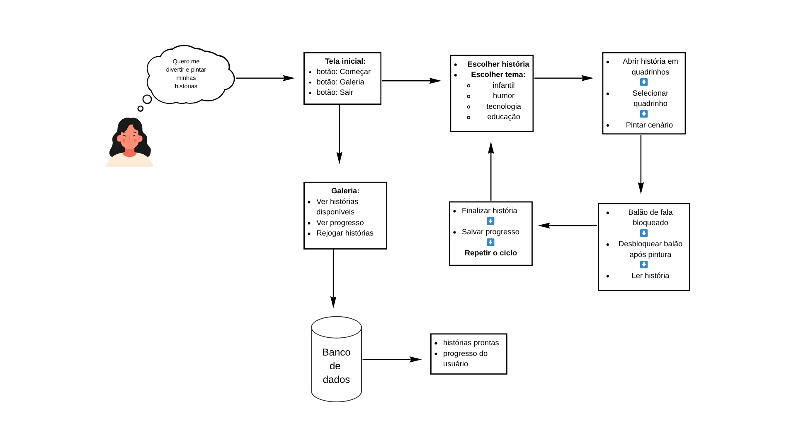
* Guilherme Flyan: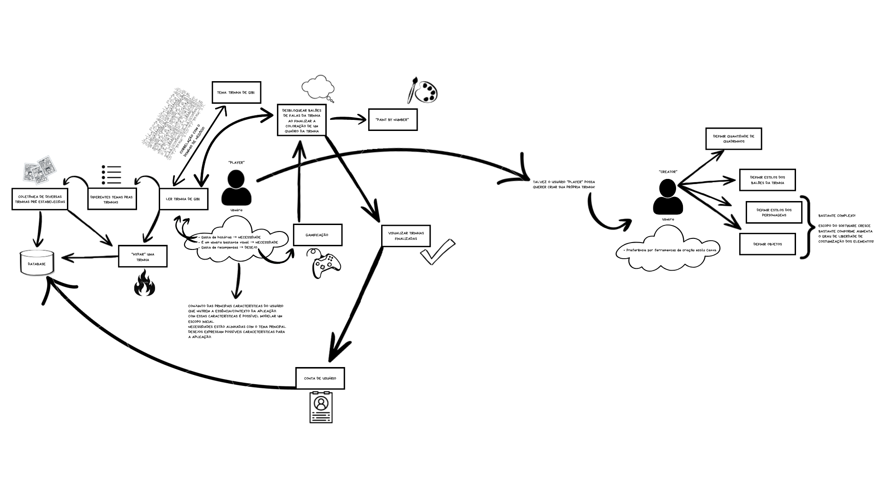
* Davi Negreiros: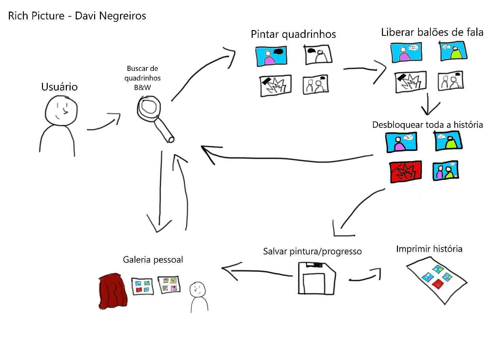
* Pedro Henrique: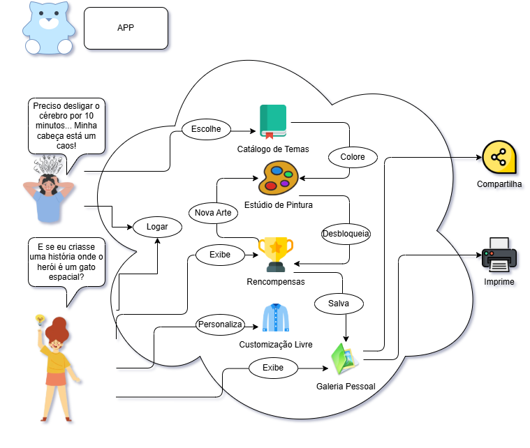
* Raíssa Oliveira: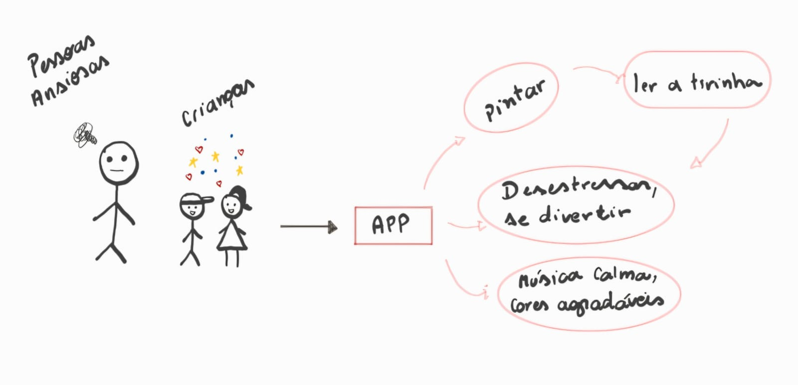
* Marjorie Mitzi: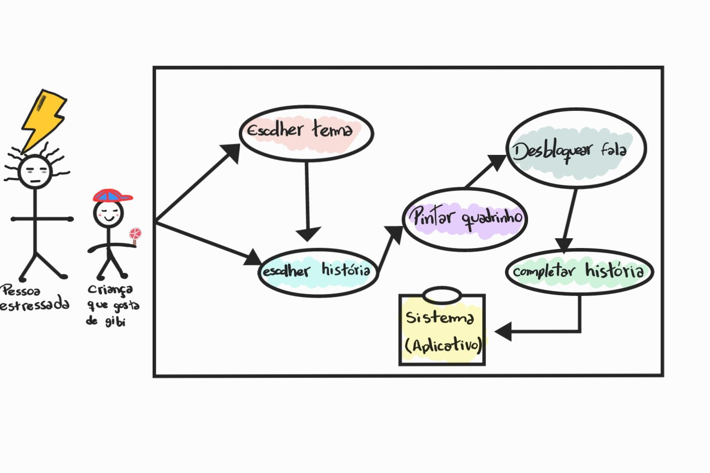
* Gabriel Pinto: * Yasmin:
* Yasmin: 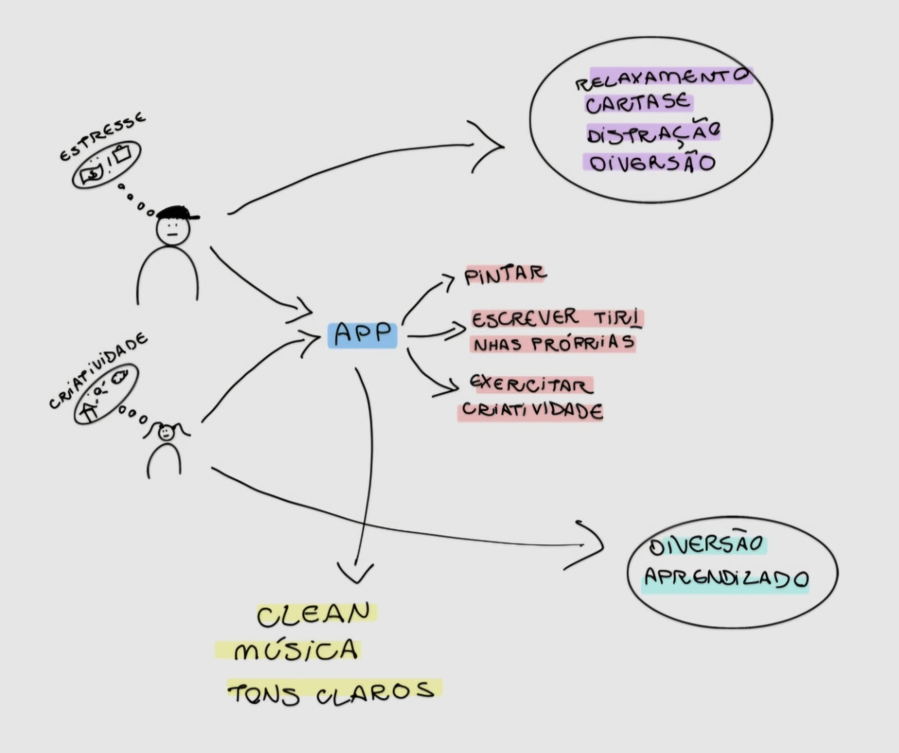
* Maria Samara: * João Marcelo:
* João Marcelo: 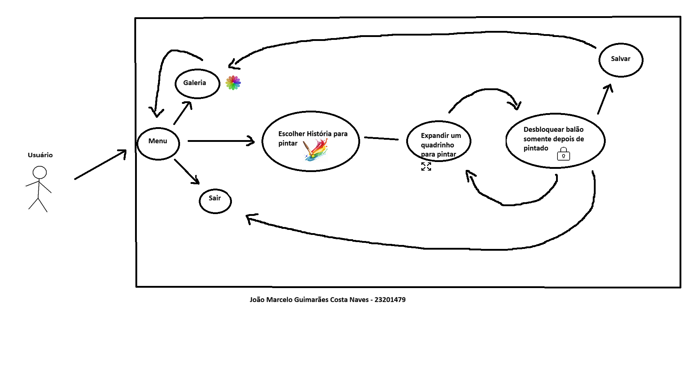
Decision (Decidir)
Após a análise das propostas individuais, o grupo realizou uma síntese para criar o Rich Picture Unificado. Este artefato final remove redundâncias e foca na trajetória crítica do usuário: a transição do estado de estresse para o relaxamento através da interação com o sistema.
O que foi feito: Unificamos o fluxo de "pintura para desbloqueio de texto", a integração com o banco de dados de histórias e as opções de compartilhamento social que apareceram como pontos fortes em todos os desenhos individuais.
Rich Picture Unificado
A seguir, a Figura 2 mostra o Rich Picture final, que foi elaborado a partir da consolidação das ideias individuais de cada membro do grupo. Este artefato sintetiza a trajetória completa do usuário e as principais funcionalidades do sistema MinhaTirinha.

Figura 2: Rich Picture Unificado (Fonte: Grupo 08, 2026)
Diagrama de Ishikawa
O diagrama abaixo, gerado como parte do refinamento visual, detalha as causas específicas identificadas, como a cultura da imediatividade e a preferência por conteúdos dopaminérgicos, vale ressaltar que os 6M’s foram adaptados ao contexto da aplicação com auxílio de IA entretanto as causas foram identificadas manualmente, onde cada M diz respeito a:
- Método (lógicas, hábitos diários e fluxos de consumo): Refere-se à forma como as pessoas organizam seu tempo e aos rituais (ou falta deles) para consumir entretenimento;
- Material (informações, conteúdos e estímulos digitais): Refere-se à matéria-prima informacional e ao tipo de conteúdo que disputa a atenção do usuário hoje;
- Mão de Obra (capacidade cognitiva, atores e usuários): Refere-se às condições psicológicas e biológicas do usuário final e das pessoas ao seu redor;
- Máquina (dispositivos, plataformas e interfaces): Refere-se aos aparelhos e ambientes digitais que moldam o comportamento do usuário;
- Medida (métricas, percepção de progresso e feedbacks): Refere-se a como o usuário percebe se está evoluindo, relaxando ou "ganhando" algo com a atividade;
- Meio Ambiente (contexto social, cultura e ecossistema): Refere-se ao cenário externo, cultural e do dia a dia que molda o estilo de vida da população;

Figura 3: Diagrama de Ishikawa (Fonte: Grupo 08, 2026)
Storyboard
O storyboard detalha visualmente o cenário de uso principal do aplicativo, validando a jornada definida no Rich Picture.

Figura 4: Storyboard da jornada do usuário (Fonte: Grupo 08, 2026)
Descrição Detalhada da Jornada
- Quadrinho 1 — O problema: O personagem aparece cansado e estressado, apresentando o conflito inicial: a necessidade de aliviar a mente após um momento de tensão.
- Quadrinho 2 — A descoberta: O personagem encontra o aplicativo, mudando sua expressão para curiosidade e esperança ao enxergar uma possibilidade de distração criativa.
- Quadrinho 3 — O início da interação: O usuário realiza o login, representando a porta de entrada oficial para a experiência de uso.
- Quadrinho 4 — A escolha do tema: O personagem escolhe um tema para sua tirinha, evidenciando a simplicidade e a intuitividade da interface.
- Quadrinho 5 — Criação e pintura: O ponto central da narrativa, onde a concentração na pintura substitui o estresse por leveza e exercício da criatividade.
- Quadrinho 6 — O resultado final: O personagem aparece relaxado e satisfeito, concretizando o objetivo do app: proporcionar bem-estar e diversão.
Estimativas
Este documento apresenta as estimativas de esforço, tempo e custo para o desenvolvimento do projeto, utilizando a técnica de Avaliação de Especialista.
Essa técnica consiste em reunir membros com conhecimento no domínio do projeto, que discutem e atribuem valores de esforço para cada atividade. A estimativa final é obtida por meio da média das avaliações, garantindo maior confiabilidade.
Informações do Projeto
- Nome do projeto: MinhaTirinha
- Grupo: 06
- Professora: Milene Serrano
- Plataforma alvo: Mobile
Premissas e Restrições
| ID | Premissa/Restrição | Impacto | Observação |
|---|---|---|---|
| P1 | Desenvolvimento em Python | Médio | Linguagem principal definida |
| R1 | Tempo de entrega acadêmico | Alto | Prazos definidos pela disciplina |
| R2 | Funcionalidades priorizadas | Médio | Foco na criação de tirinhas |
| R3 | Equipe reduzida | Médio | Poucos desenvolvedores |
| R4 | Uso de ferramentas simples | Baixo | Sem frameworks complexos |
Método de Estimativa
- Técnica: Avaliação
- Participantes: João Marcelo, Davi Monteiro
- Critério de consenso: Média aritmética
Lista de Atividades e Estimativas
| ID | Requisito | Complexidade | Esforço | Custo |
|---|---|---|---|---|
| RF1 | Realizar cadastro | Médio | Médio | Médio |
| RF2 | Realizar login | Médio | Médio | Médio |
| RF3 | Visualizar catálogo | Baixo | Médio | Médio |
| RF4 | Selecionar história | Baixo | Baixo | Baixo |
| RF5 | Visualizar histórias iniciadas | Médio | Médio | Baixo |
| RF6 | Acessar galeria pessoal | Baixo | Médio | Médio |
| RF7 | Exibir história em sequência | Baixo | Baixo | Baixo |
| RF8 | Selecionar quadrinho | Baixo | Baixo | Baixo |
| RF9 | Inserir elementos | Médio | Médio | Médio |
| RF10 | Pintar elementos | Médio | Médio | Médio |
| RF11 | Bloquear balões | Médio | Baixo | Baixo |
| RF12 | Desbloquear balões | Médio | Médio | Médio |
| RF13 | Feedback de conclusão | Baixo | Baixo | Baixo |
| RF14 | Paleta de cores | Médio | Médio | Médio |
| RF15 | Ferramenta balde | Alto | Alto | Alto |
| RF16 | Borracha | Médio | Médio | Médio |
| RF17 | Cores recentes | Médio | Médio | Médio |
| RF18 | Cor via RGB | Médio | Baixo | Baixo |
| RF19 | Salvar automático | Alto | Alto | Alto |
| RF20 | Salvar remoto | Alto | Alto | Alto |
| RF21 | Retomar progresso | Médio | Baixo | Baixo |
| RF22 | Redefinir progresso | Médio | Médio | Baixo |
| RF23 | Compartilhar/baixar | Médio | Baixo | Baixo |
Critérios de Classificação
Complexidade
- Baixo: Simples
- Médio: Moderado
- Alto: Complexo
Esforço
- Baixo: Rápido
- Médio: Moderado
- Alto: Demorado
Custo
- Baixo: Poucos recursos
- Médio: Recursos moderados
- Alto: Alto custo
Protótipos
Protótipos de Alta Fidelidade Os protótipos de alta fidelidade foram desenvolvidos para validar a interface e a experiência do usuário (UX), focando em uma estética relaxante com tons pastéis e interações intuitivas.
-
Navegação e Exploração A jornada começa na Biblioteca de Aventuras, onde o usuário pode filtrar histórias por gênero e acessar o menu lateral para gerenciar sua conta e galeria.
-
Experiência de Pintura e Progresso O diferencial do aplicativo é a mecânica de "Pintar para Ler". O usuário só desbloqueia os diálogos e avança na história à medida que completa a pintura do quadrinho, incentivando o foco e a atenção plena.
-
Galeria Pessoal e Compartilhamento Após concluir uma obra, o usuário pode visualizar sua coleção organizada por gêneros na Galeria Pessoal e compartilhar seu progresso em redes sociais, reforçando o aspecto positivo da conquista.
Protótipo de Alta Fidelidade
Cadastro
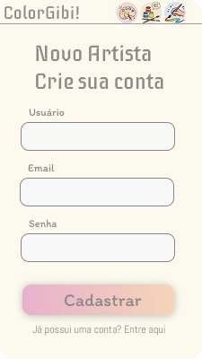
Login
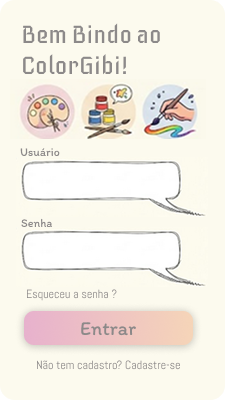
Side bar

Biblioteca
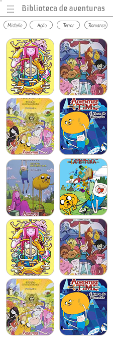
História completa

Tela de pintar

Tela de progresso

Galeria
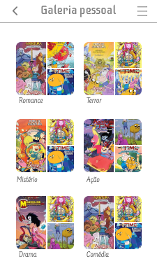
Salvar e compartilhar

Validação
A validação de software é o processo de verificar se o sistema atende às necessidades reais do usuário e se cumpre seu propósito de uso. No caso da equipe, a metodologia utilizada foi uma validação formativa de protótipo com usuário, feita por meio de uma reunião guiada, em que os integrantes apresentaram as 9 telas do aplicativo e fizeram perguntas sobre clareza, cores, legibilidade, organização dos elementos e entendimento do fluxo. Assim, a avaliação teve foco mais qualitativo do que técnico, buscando identificar se o protótipo era compreensível e intuitivo para o usuário.
Pela descrição da reunião, os resultados foram positivos. O usuário considerou o protótipo intuitivo, elogiou a identidade visual, a legibilidade das fontes e a organização das telas. Também entendeu bem o fluxo entre cadastro, login, biblioteca, pintura, desbloqueio de falas, progresso, compartilhamento e galeria pessoal. Isso mostra que o protótipo conseguiu comunicar bem suas funções principais e oferecer uma navegação coerente.
Como pontos de melhoria, surgiram principalmente duas sugestões: adicionar a funcionalidade de “esqueci minha senha” nas telas de autenticação e incluir títulos nos gibis da biblioteca para facilitar a identificação do conteúdo. Esses achados são relevantes porque mostram ajustes simples, mas importantes, para melhorar a experiência do usuário e a completude funcional da solução.
-
Documento de transcrição da validação:
-
Reletório de validação do protótipo
-
Objetivo
Este documento tem como objetivo apresentar os resultados da validação de um protótipo de aplicativo de colorir, com foco na análise de usabilidade, compreensão da interface e eficiência do fluxo de navegação.
A validação buscou verificar se o usuário é capaz de: - Navegar entre as telas de forma intuitiva - Compreender o funcionamento geral do sistema - Executar tarefas sem auxílio - Identificar possíveis dificuldades ou pontos de melhoria
- Público-Alvo
A validação foi realizada com o usuário que: - Possuem familiaridade básica com aplicativos móveis - Demonstram interesse em jogos ou atividades interativas
- Cenário de Uso
“Imagine que você baixou um aplicativo de colorir para relaxar e acompanhar seu progresso. Você deseja escolher um desenho, começar a pintar e depois visualizar sua evolução dentro do aplicativo.”
- Metodologia
O teste foi conduzido de forma moderada com acompanhamento.
Durante a execução: - O participante foi incentivado a pensar em voz alta - Não houve interferência do facilitador durante as tarefas
- Resultados por Tarefa
5.1 Cadastro/Login Resultados: - Interface considerada visualmente agradável - Cores bem avaliadas - Tipografia legível - Estrutura adequada
Pontos de melhoria: - Ausência da funcionalidade “Esqueceu a senha?” - Falta de orientações sobre requisitos de senha
5.2 Explorar a Biblioteca Resultados: - Variedade de desenhos bem avaliada - Sistema de abas intuitivo - Filtros funcionais
Pontos de melhoria: - Falta de títulos nos desenhos - Melhor integração entre “Continuar colorindo” e “Progresso” - Falta de tela específica para galeria pessoal com filtros
5.3 Iniciar Pintura - Fluxo claro e direto
5.4 Continuar Pintura - Funcionalidade compreendida com facilidade
5.5 Visualizar Progresso - Indicadores claros
5.6 Compartilhar Desenho - Ícones e botões compreensíveis
5.7 Acessar Galeria Pessoal - Organização clara
- Feedback do Usuário
Pontos positivos: - Interface intuitiva - Navegação clara - Design agradável - Cores atrativas
Pontos de melhoria: - Inclusão da funcionalidade “Esqueceu a senha?” - Adição de títulos nos desenhos - Melhor integração entre telas
- Conclusão
A validação demonstrou boa usabilidade e compreensão do sistema, com oportunidades de melhoria relacionadas à recuperação de senha, organização de conteúdo e integração entre funcionalidades.
Referência Bibliográfica
- SERRANO, Milene. Arquitetura e Desenho de Software - Aula BPMN. UnB, 2026.
- SERRANO, Milene. Arquitetura e Desenho de Software - Aula Revisão Requisitos. UnB, 2026.
- SERRANO, Milene. Arquitetura e Desenho de Software - Aula RichPicture. Material de aula (slides). Universidade de Brasília (UnB), 2026.
Histórico de Versões
| Versão | Data | Descrição | Autor(es) | Revisor(es) |
|---|---|---|---|---|
| 1.0 | 30/03/2026 | Elaboração inicial dos artefatos | Grupo 08 | — |
| 1.1 | 31/03/2026 | Adição do Storyboard | Gabriel Santos e Pedro Henrique | Maria Samara |
| 1.2 | 04/04/2026 | Unificação do Rich Picture e padronização visual | Marjorie Mitzi | João Marcelo |
| 1.3 | 04/04/2026 | Unificação do Rich Picture e padronização visual | Marjorie Mitzi | João Marcelo |
| 1.4 | 05/04/2026 | Adição das estimativas do projeto | João Marcelo | Davi Negreiros |
| 1.5 | 05/04/2026 | Refatoração da explicação do Digrama de Ishikawa | Guilherme Flyan | Maria Samara |
| 1.6 | 06/04/2026 | Adição da validação do protótipo | Gabriel Santos, Maria Samara e Marjorie Mitzi | Ana Carolina Fialho |
| 1.7 | 06/04/2026 | Formatando imagens do Rich Picture | Gabriel Santos | Guilherme Flyan |
| 1.8 | 06/04/2026 | Adição do relatório de validação | Maria Samara | Gabriel Santos |
| 1.9 | 06/04/2026 | Revisão e refatoração do documento | Davi Negreiros | - |